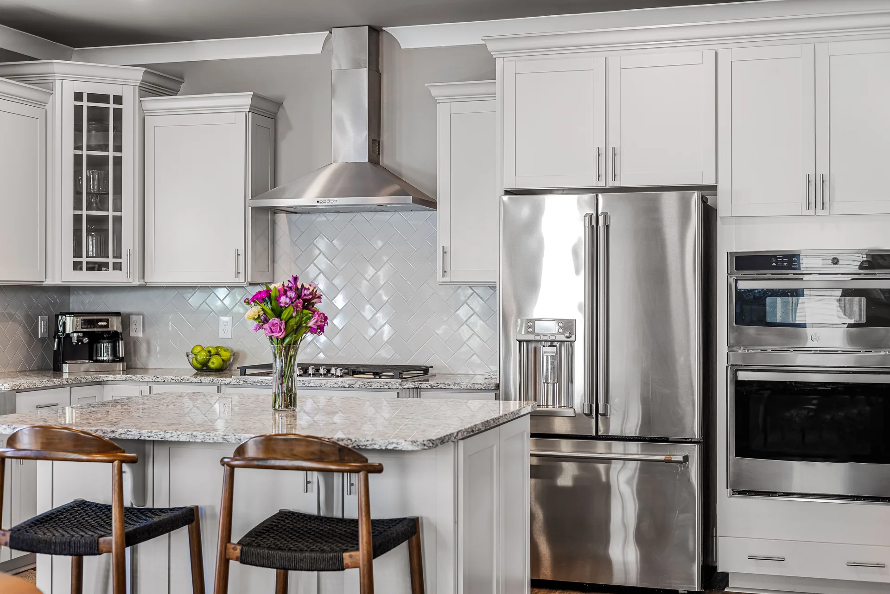
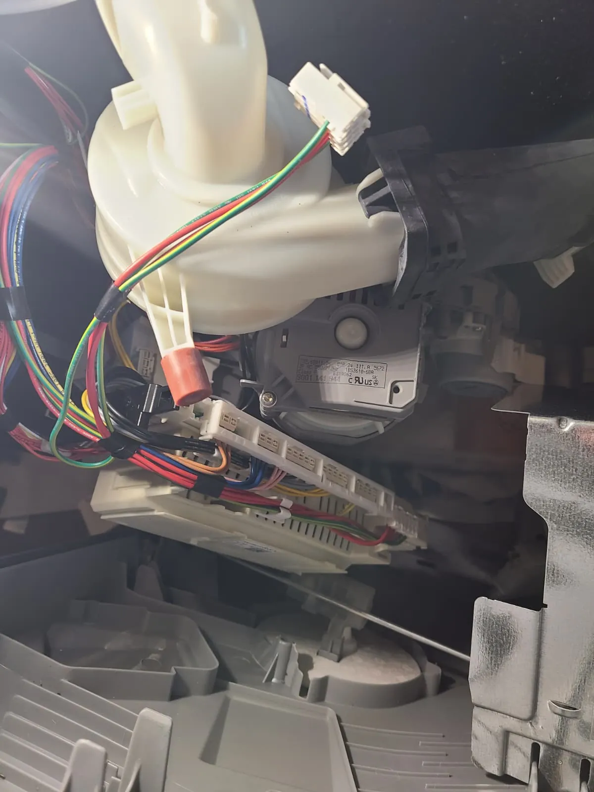

Alex Appliance Repair | Indianapolis, Indiana
Appliance Repair in Indianapolis and Nearby Communities
Same-day and next-day appointments when available for refrigerators, washers, dryers, dishwashers, ovens, cooktops, microwaves and freezers.
- 5.0 Google Rating
- $89 Service Call
- Waived With Repair
- 12-Month Warranty
Kitchen and laundry appliances
Appliance repair services
Choose the appliance that needs attention for service details, common symptoms and scheduling information.
Original service-call photos
Real Completed Repairs
Open a repair to view the diagnostic access, replaced components and completed work from that same appointment.
Service routes near Indianapolis
Appliance Repair Service Areas
Choose your city for ZIP codes, neighborhood coverage and appliance-specific local service pages.


Hamilton County
Noblesville
ZIP 46060, 46062 and nearby Noblesville neighborhoods.
View Noblesville service


Owner-operated local service
Why homeowners choose Alex Appliance Repair
Alex Appliance Repair is operated by Aksenov LLC. Each appointment follows a clear process from the first symptom check through final testing and warranty documentation.
- DiagnoseInspect the appliance and verify the reported failure.
- ApproveExplain the findings and confirm the repair price before work begins.
- RepairReplace or service the failed component with care for the home.
- TestRun applicable operating checks after the repair.
- WarrantyDocument the completed work with a 12-month parts and labor warranty.
5.0 Google Rating
Recent customer reviews
Feedback from homeowners who scheduled appliance repair with Alex Appliance Repair.
★★★★★
Set up an appointment on Wednesday afternoon and my dryer was fixed under an hour after Alex arrived. Prompt and efficient.
Jason Potter★★★★★
We had an outstanding experience with Alex. He responded incredibly fast and was able to help with our dishwasher right away.
Darrell Guenin★★★★★
The best of the best! I was able to get an appointment immediately. Alex explained everything and fixed the dryer professionally.
Iris BartonBefore you schedule
Appliance repair questions
How much is the service call?
The service call is $89 and is waived when the quoted repair is completed.
What warranty is included?
Completed repairs include a 12-month parts and labor warranty for the same repaired issue under the applicable service terms.
Which cities do you serve?
We serve Indianapolis and nearby Carmel, Fishers, Westfield, Noblesville, McCordsville and Zionsville communities.
Which appliance brands do you repair?
We service many major brands, including LG, Samsung, Whirlpool, Maytag, GE, Frigidaire, Electrolux, Bosch, KitchenAid and others.
How soon can an appointment be scheduled?
Same-day and next-day appointments may be available depending on the address, appliance, parts and current route capacity.
Which appliances do you repair?
We repair refrigerators, washers, dryers, dishwashers, ovens, stoves, cooktops, microwaves and freezers.
Schedule your appliance repair
Share the appliance, brand, model number, current symptom and service address.